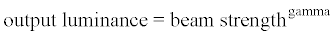

The CIE Color Analysis dialog box is accessible from the Analysis
menu in ASAP. Use it to select settings for CIE calculation and to initiate the
calculations.
The top portion of this dialog is described below. The three tabs
below, Object tab, Window tab, and Display/Calculations tab, are described in
separate help topics.
| Color Appearance Model | CIE LAB models for 1931 (default), 1964, or 1976 can be
assigned. See its formula for measuring color discrepancy in the CIE Glossary
of Terms. |
| Standard Observer Model: | Indicates the CIE tristimulus values. Select the 2 degree or
10 degree models from the drop-down list. The default is 10. |
| Color System | |
| Dell | Dell display monitor (default) |
| NTSC | National Television System Committee |
| EBU | European Broadcasting Union |
| SMPTE | Society of Motion Picture and Television Engineers |
| Short/Long Persistence | Amount of time the phosphor can hold its energy |
| Display Gamut | Select to view the color performance in a chosen CIE
chromaticity diagram for the currently selected color system. |
| Gamma | Corrects display monitor non-linearity. The default value is
1. Output of the phosphor is not directly proportional to the impinging beam
strength. This response characteristic is described by the function,

|
| Observer White Point: | Select the effective white point from the perspective of a
would-be observer.
|
| Illluminant A (2856K) | Represents typical, domestic, tungsten-filament lighting.
Its relative spectral power distribution is that of a Planckian radiator at a
temperature of approximately 2856 K. Used in all applications of colorimetry
involving the use of incandescent lighting. |
| Illuminant B (4874 K) | Represents
direct sunlight, and has a color temperature of
approximately 4874 K. |
| Illuminant C (6774 K) | Represents
northern blue heaven or
indirect sunlight, and has a correlated color temperature of
approximately 6770 K. |
| Illuminant D55 (5503 K) | Represents
noon sky daylight, and has a correlated color temperature of
5500 K. |
| Illuminant D65 (6504 K) | Represents
average daylight, and has a correlated color temperature of
approximately 6500 K. Used in all colorimetric calculations requiring
representative daylight*. This white point is the default. |
| Illuminant E (5400 K) | Represents
normalized reference light, and has a correlated color
temperature of approximately 5400 K. |
| OK button | Click to exit the CIE Color Analysis dialog and initiate CIE
color calculations. |
| Cancel button | Click to exit the CIE Color Analysis dialog without saving
any changes or initiating CIE color calculations. |
| View Sample button | Click to view a sample rendering of a chromaticity diagram
for the CIE 1931, 1965, and 1976 Color Appearance Models, for the 2-degree or
10-degree Standard Observer Model, for the Color System, or for the Display
Gamut (if selected). |
Note: CIE analysis can also be run from the Command Input window with the
macro, $GUI CalculateCIE.